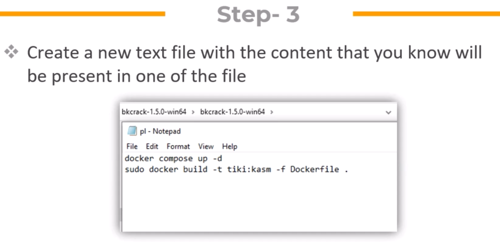
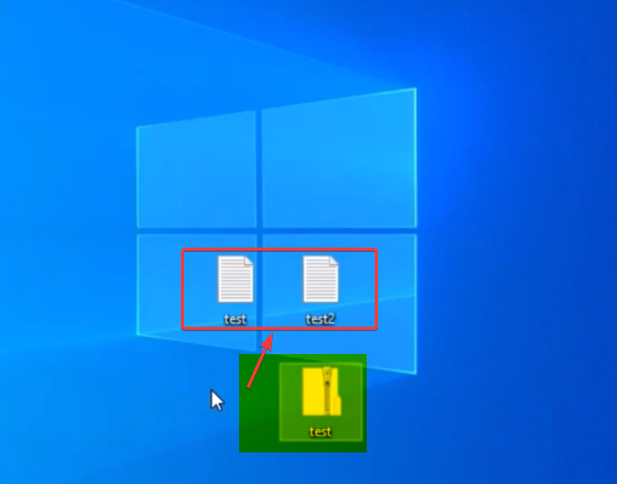
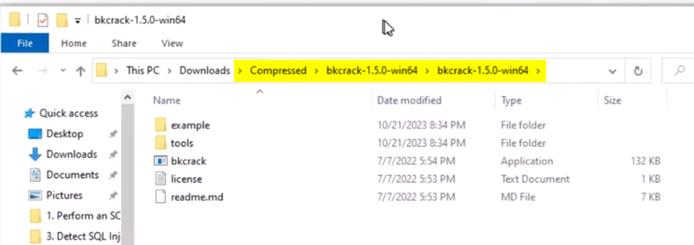
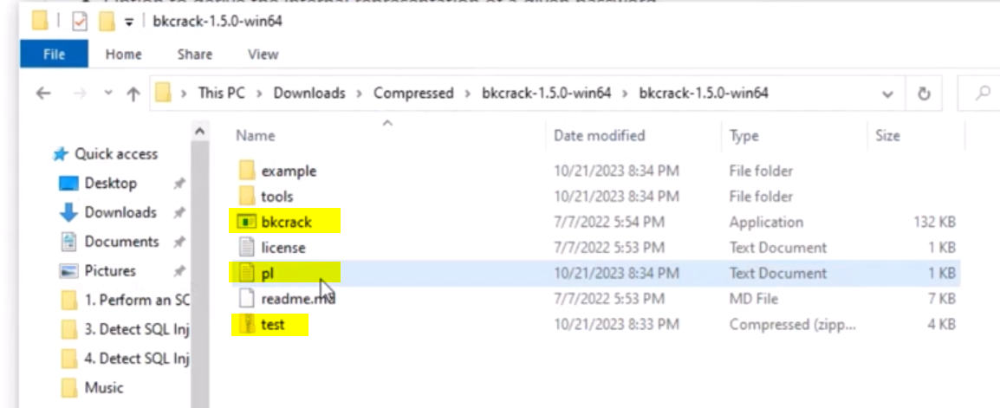
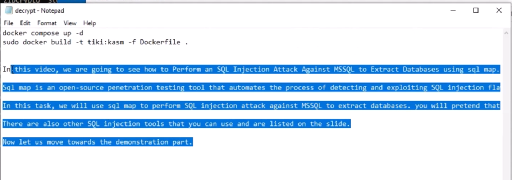
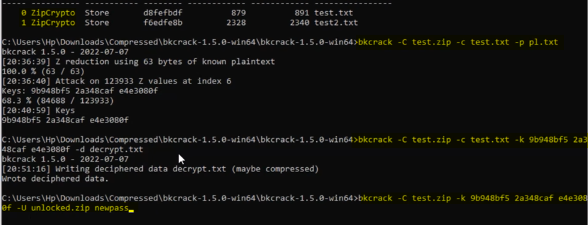
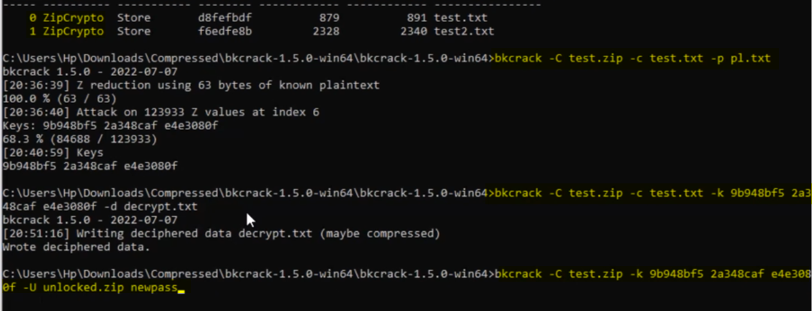

مفاهیم Encoding, Encryption, Hashing, Obfuscation
23 خرداد 1404
کرک فایل های فشرده(الگوریتم ZIP-Crypto) با ابزار Bkcrack


در رمزنگاری فایل های Zip قدیمی Encrypt بر روی داده صورت نمیگرفت و در واقع از متدی بنام `Store` برای ذخیره سازی فایل درون فایل Zip استفاده میشد.
در تصویر زیر شماتیک حمله Plain Text Attack را میتوانید مشاهده کنید
برای تست این روش نیاز داریم که یک آرشیو ZIP آسیب پذیر ایجاد کنیم. برای ایجاد این فایل از نرم افزار `7z` استفاده میکنیم.
برای ساخت آرشیو ZIP آسیب پذیر، در هنگام ساخت ZIP تنظیمات آرشیو را ماننند تصویر زیر تنظیم میکنیم:


فایل `test.zip` آسیب پذیر که ساختیم را به پوشه `Bkcrack` انتقال میدهیم و `CMD` را در آن پوشه باز میکنیم، سپس کامند زیر را برای کرک فایل `test.zip` اجرا میکنیم:
bkcrack -L test.zip
با اجرای کامند بالا، ابزار محتویات درون `test.zip` را لیست میکند.
مثلا درون فایل `test.zip` یک فایل متنی `test.txt` وجود دارد، که میدانیم در آن فایل کدهای اجرای کانتینر Docker است.
بنابراین فایل متنی بنام `pl.txt` ایجاد میکنیم که باید شامل محتویات زیر باشد:
در واقع از این فایل به عنوان Cipher text برای ورودی کرک استفاده میشود که در مکانیزم Bkcrack میتوانیم محل Cipher Text را مشاهده کنیم:
برای بدست آوردن Recovery Key نیازمند فایلی هستیم که محتویاتی داشته باشد که حدس میزنیم در فایل تارگت که میخواهیم کرک شود هم وجود دارد. این فایل با فلگ `p-` به عنوان *Plain Text* به ابزار *Bkcrack* معرفی میشود،
bkcrack -C test.zip -c Test/test.txt -p pl.txtbkcrack -C VulnZip -c VulnZip/request.py -p pl.txttest.zip => -C: همان فایل آرشیو Zip ماست. از فلگ `-C` برای معرفی فایل آرشیو اصلی استفاده میشود.test.txt => -c: فایلی درون آرشیو که هدف ماست و میخواهیم کرک شود. از فلگ `-c` برای معرفی فایل تارگت همان Cipher که میخواهیم کرک شود استفاده میکنیم.pl.txt => -p: یک فایل متنی که شامل محتویاتی است که درون فایل تارگت هم وجود دارد. از فلگ `-p` برای معرفی فایل Plain Text که شامل مقداری از Content فایل تارگت است استفاده میشود.
bkcrack -C test.zip -c test.txt -k f04945f4 3018d661 edc704a6 -d decrypt.txt
decrypt.txt: فایل خروجی که حاوی فایل کرک شده است.-k: برای وارد کردن Recovery Key در جلوی کامند از ای فلگ استفاده میشود.-d: از این فلگ برای مشخص کردن فایل Decrypt شده که همان نتیجه کرک است استفاده میکنیم.با استفاده از Recovery Key میتوانیم یک فایل آرشیو جدید از فایل `test.zip` با پسورد جدید بسازیم.
bkcrack -C test.zip -k f04945f4 3018d661 edc704a6 -U Unlocked.zip NewPassword
با اجرای کامند بالا از فایل `test.zip` یک نمونه جدید بنام `Unlocked.zip` ایجاد کردیم که پسورد آن `NewPassword` است و تمام فایل هایی که درون آرشیو `test.zip` وجود دارند درون آرشیو جدید `Unlocked.zip` هم وجود دارند.
.\bkcrack.exe -C .\VulnZip.zip -k 348e6771 cecf3c76 51a09805 -D decrypt.zip
با این کامند یک فایل آرشیو ZIP جدید بنام `decrypt.zip` ساخته میشود که حاوی تمام محتویات فایل `VulnZip.zip` میشود.
در این سناریو 2 فایل متنی بنام `test, test2` داریم که فایل های کانفیگ Docker یک ایمیج هستند.
فایل `test1.txt` دارای محتویات زیر است:

حال Attacker باید سعی کند حداقل محتویات درون این فایل را بفهمد، یعنی حداقل 2 یا سه خط اول فایل را بدست بیاورد و سپس درون فایل متنی جدیدی بریزد تا بتواند به عنوان ورودی Plain Text در جلوی فلگ `p-` آنرا وارد کرد.

در بسیاری از سناریو ها مشخص است درون فایل تارگت ما چه جیزی وجود دارد.
فایل `test2.txt` حاوی یکسری متن معمولی است که درون آرشیو وجود دارد. در این سناریو فرض میکنیم Attacker هیچ اطلاعاتی از محتویات درون این فایل ندارد.

Select test1, test2 => Right-Click => 7-Zip => Add to Archive...
حال در دسکتاپ فایلی بنام `test.zip` داریم.
بر اساس سیستم عامل خودتان، BK-Crack را از لینک زیر دانلود کنید:
https://github.com/kimci86/bkcrack/releases 
ساخت `pl.txt` در دایرکتوری `bkcrack.exe` و نوشتن محتویات زیر درون آن

حال تمام فایلهای مورد نیاز را برای شروع فرآیند کرک در اختیار داریم.
Open CMD and navigate to `bkcrack.exe` folder
cd C:\Downloads\Compressed\bkcrack-1.5.1-win64bkcrack.exe -L test.zip
bkcrack -C test.zip -c test.txt -p pl.txt
پس از اجرای این کامند ابزار حمله ای Bruteforce را پیاده سازی میکند و پس از چند دقیقه Recovery Key فایل تارگت بدست می آید.
bkcrack -C test.zip -c test.txt -k f04945f4 3018d661 edc704a6 -d decrypt.txt
Now Decrypted(Cracked) file save in `bkcrack.exe` folder

فایل `decrypt.txt` در واقع فایل کرک شده همان `test.txt` است و تمام محتویات آنرا شامل میشود:
در این حمله از فایل آرشیو یک نمونه جدید بدون پسورد میسازیم.
bkcrack -C test.zip -k f04945f4 3018d661 edc704a6 -D Decrypt.zipدر این حمله از فایل آرشیو یک نمونه جدید با پسورد دلخواه میسازیم.
bkcrack -C test.zip -k f04945f4 3018d661 edc704a6 -U Unlocked.zip d@vood129فایل آرشیو جدید ما بنام `Unlocked.zip` از نمونه رمز نگاری خود `test.zip` در پوشه `bkcrack` ایجاد شده و با پسورد `d@vood129` میتوانیم آنرا *Extract* کنیم. در این فولدر هر دو فایل متنی `test1, test2` را میتوانیم مشاهده کنیم:

cd C:\Downloads\Compressed\bkcrack-1.5.1-win64
bkcrack.exe -L test.zip #List all files in Archive
bkcrack -C test.zip -c test.txt -p pl.txt #Get Recovery Key
#Decrypt test1.txt to decrypt.txt
bkcrack -C test.zip -c test.txt -k f04945f4 3018d661 edc704a6 -d decrypt.txt
#Create new Archive without password
bkcrack -C test.zip -k f04945f4 3018d661 edc704a6 -D Unlocked.zip
#Create new Archive with password
bkcrack -C test.zip -k f04945f4 3018d661 edc704a6 -U Unlocked-Password.zip d@vood129 

در این مقاله این مفاهیم رو بررسی میکنیم و تفاوت های آنها را یاد میگیریم.
در این آموزش ابتدا مفاهیم Unicode رو بررسی میکنیم و سپس کاراکترهای ASCII رو یاد میگیریم.